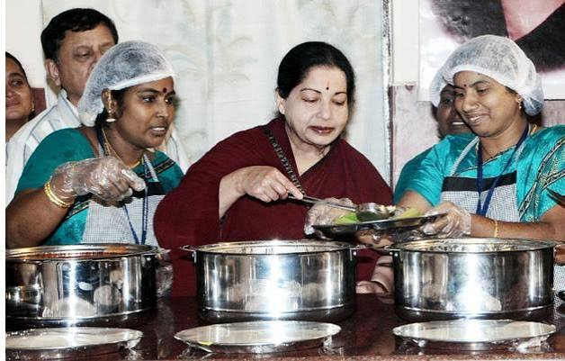
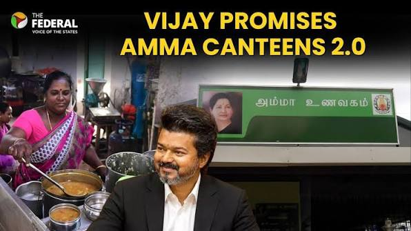

Amma Unavagam

Yes, former Tamil Nadu Chief Minister J. Jayalalithaa started the "Amma Unavagam" (Amma Canteen) chain. Launched on February 19, 2013, these state-run canteens were designed to provide highly subsidized, hygienic, and nutritious food (such as idlis, sambar rice, and curd rice) for economically disadvantaged individuals, daily wage laborers, and students.Key details about the Amma Canteens:Pricing: Food is sold at heavily subsidized rates, generally ranging from Re 1 to Rs 5.Operation: They are run by Women's Self-Help Groups (SHGs) under the Greater Chennai Corporation and other municipal bodies, providing critical local employment.Reach: There are over 400 locations throughout Tamil Nadu.You can find a list of operating locations across the Greater Chennai Corporation via the Chennai Corporation Official Portal.
Now Vijay 2.0

Tamil Nadu Chief Minister Vijay has ordered a statewide revamp of over 600 Amma Canteens to resolve recent food quality issues. The "Vijay 2.0" upgrade focuses on modernizing infrastructure and equipment to ensure hygienic, tasty meals across all locations, including the 383 canteens in Chennai.The Amma Unavagams (also known as Amma Canteens) are vital lifelines for the urban poor and working class, providing hot meals at highly subsidized prices.Following public feedback regarding a decline in quality, CM Vijay held review meetings directing officials to upgrade kitchens and restore the original high standards of the welfare initiative. Despite the transition in state leadership, the government has chosen to retain the original name to ensure public trust and continuity.You can read more about the modernization efforts and official directives in the Times of India Report or catch local community updates on the India Today Facebook Video.